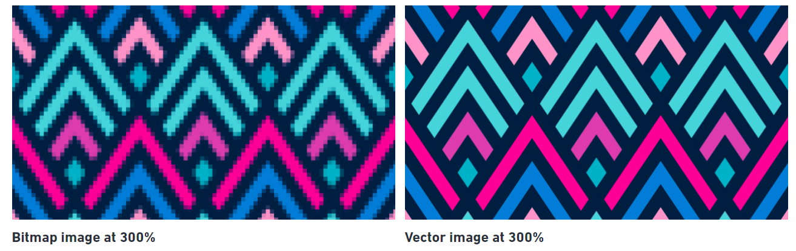
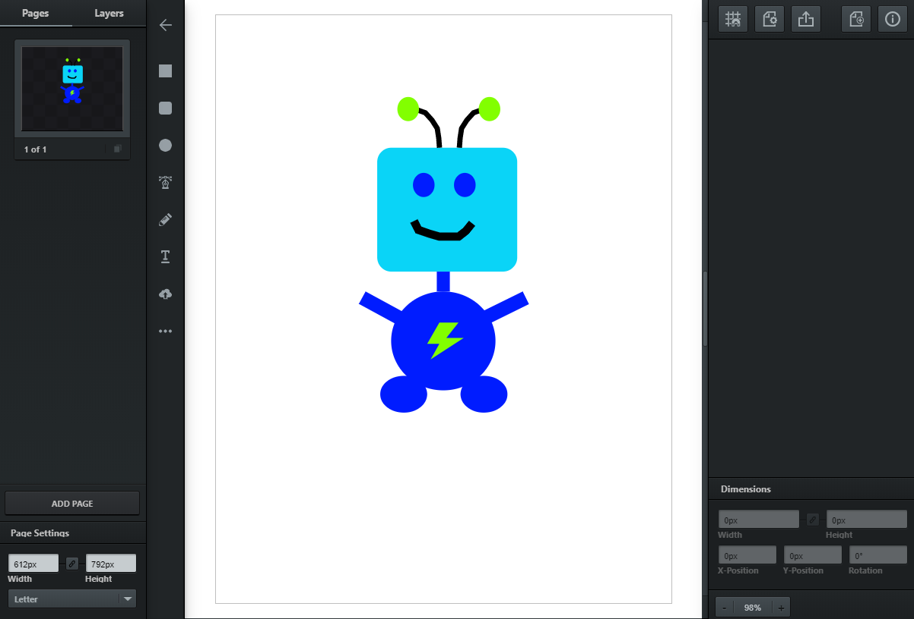
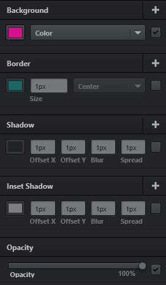
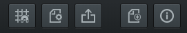

What You Should Know - Vectr: Character Art Symmetry
 Important Vocabulary
Important Vocabulary
- Line Symmetry - if a figure can be divided into two halves that match exactly, then the figure has line symmetry.
- Line of Symmetry - a line that divides a figure into two congruent halves that are mirror images of each other.
- Horizontal - parallel to the horizon, or side to side.
- Vertical - up and down.
- Diagonal - sloping up or down.
Vector vs. Bitmap
When designing graphics that need to appear "crisp" in different sizes, use vector images. A vector image uses mathematical formulas to make lines that can be combined to form shapes (or geometric “objects”). This is why vectors also are called object-oriented graphics. This allows vector graphics to be scaled to any size without giving up image quality, as well as maintain a small file size.

Toolbars and Controls
Take some time to get to know each function and feature in the Vectr Workspace.
Toolbar
The toolbar on the left side of the workspace is where you will find all the creation tools, which houses all the tools you need to create your masterpieces. The left toolbar of this panel shows my profile arrow, rectangle, round rectangle, ellipse, pen tool, pencil tool, text, upload an image, and more shapes (from top to bottom).
Workspace
The Workspace is where you edit your graphics.

Filters
In Vectr, filters are things like backgrounds, borders, shadows, etc.

Editing Panel
On the right side of the Workspace, you will find the Editing Panel. The top bar of this panel shows the grid/snap, file settings, export options, starting a new file, and help options (from left to right).

Looking for Symmetry
Once you have drawn your character, you will analyze it for line symmetry. You will look for line symmetry in the overall shape of your character as well as individual parts.
Select each item to learn more about line symmetry.
Line Symmetry

The head has line symmetry. But if we include the face, the head no longer has line symmetry because the smile is a bit crooked. This crooked smile changes the style of the character

Also, the shape of the head has more than one line of symmetry. It could be folded in half horizontally, vertically, and diagonally to make two sides that would match up exactly.

Vertical Line Symmetry
The body has vertical line symmetry. But the lightning bolt design does not. There is no way to split the lightning bolt into two equal halves. The lightning bolt tells us something about the style of the character though.

Infinite Line Symmetry
The circle at the end of the antennae has infinite line symmetry. A circle has infinite lines of symmetry because you could fold it in half anywhere to make two sides that match up exactly.

Career Connection and Real-World Application
Line Symmetry in Careers
Design tools such as Vectr and concepts such as line symmetry are used by many professions including animators and landscapers. Animators often start their designs with simple shapes, many of which have line symmetry. Then, as the style of the drawing develops, the designs become more complicated. Landscapers often add features such as flowers, trees, and bushes in symmetrical ways.
.jpg "animator")